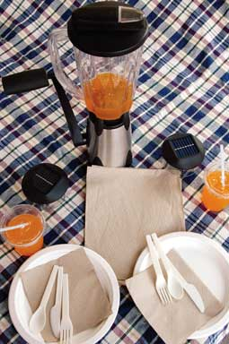

Outdoor parties, picnics and hikes can be distressinglyearth-unfriendly. You can end up with bags full of 'disposable'products like paper plates, plastic cups and utensils. Now, you canbuy fully biodegradable alternative products to replace those itemsand more. Here are several earth-friendly ideas to help you enjoyboth nature and convenience as you keep your gathering green.
1. Biodegradable plates ? as sturdy as paper, but made fromcane fibers, a natural byproduct of sugar refining. When thepicnic's over, toss them in the compost pile. $21 for 125;Treecycle; (406)626-0200.
2. Tableware utensils ? 100 percent tree- andpetroleum-free, made from plastic based on potato starch, they'lldecompose in a compost pile. $6 for 50 forks, knives or spoons;Real Goods; (800)919-2400.
3. Compostable cups and straws ? made from a corn-basedplastic. Drink up, then toss these nonallergenic, crystal-clearcups and straws into your compost pile. $9 for 50 cups, $6 for 400straws; Eco-Products;(303) 449-1876.
4. Vortex blender ? it's human-powered! Whip up partydrinks, even miles from any electrical outlet. Forty-eight ouncepitcher, stable stainless-steel base, ergonomic handle with twospeeds, secure base clamp. $88;Real Goods; (800)919-2400.
5. Petroleum-free charcoal starter ? Every cookout needs afire, but not the smelly smoke of petroleum-based starter fluid.Odorless, ethanol-based fluid is 99 percent petroleum-free andburns hotter than standard fluids. $7 for a 32 ounce bottle;Real Goods; (800)919-2400.
6. Water filter ? Fill the Katadyn Base Camp water filter,hang it in a tree and let gravity supply the drinking water. TheEPA-approved element removes bacteria and parasites from 5 quartsof water in 10 minutes, without pumping or chemicals. $59;L.L.Bean; (800) 441-5713.
7. Solar candles ? Wax candles burn down, flicker and blowout, and they're unsafe in some situations. Set these niftysolar-powered LED table lights in the sun during the day, thenenjoy hours of safe, flicker-free amber light. $20;Real Goods; (800)919-2400.
8. Recycled paper products ? Clean up with unbleached, 100percent recycled napkins and paper towels. $6 for 500 napkins, $11for six 120-sheet rolls;Treecycle; (406)626-0200.
9. Table linens ? 100 percent natural, certified organiccotton, with patterns created by the natural colors of differentcotton varieties. $42.95 for a 50-inch-square tablecloth (matchingnapkins and placemats also available);Abundant Earth; (888)523-2784.
|
 |
|
|